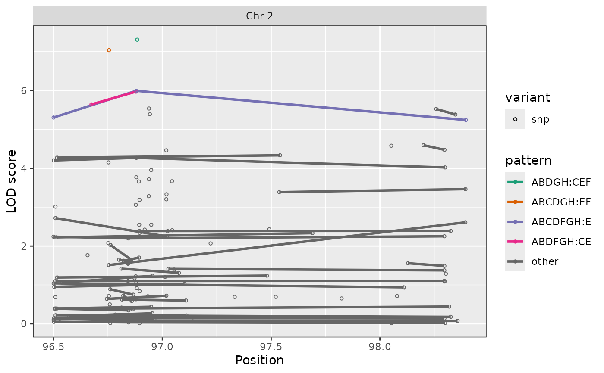
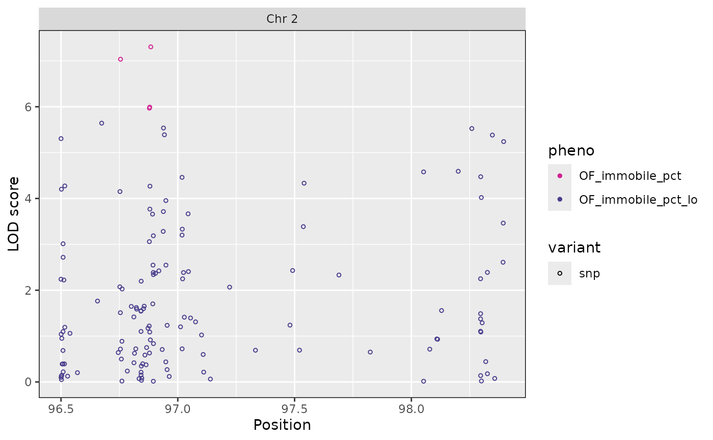
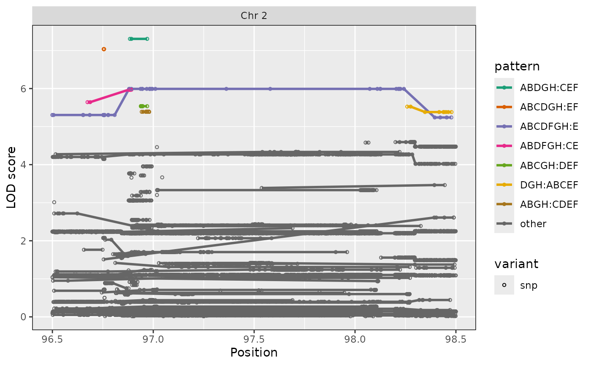
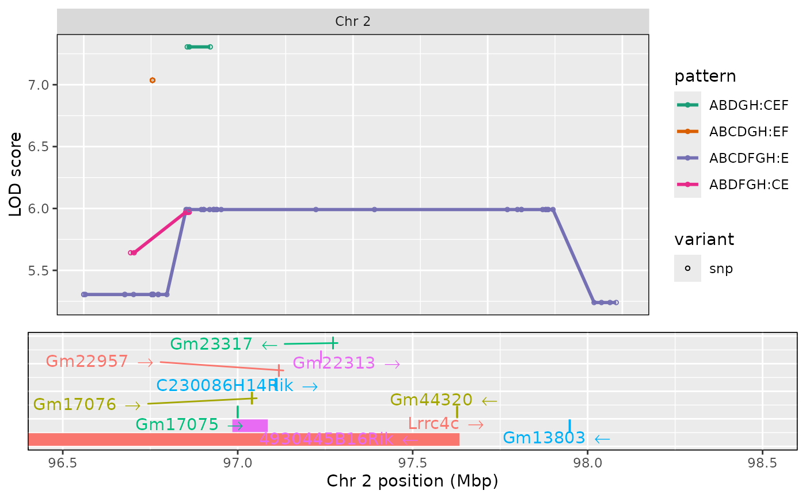

Plot SNP associations, with possible expansion from distinct snps to all snps.
Usage
ggplot_snpasso(
scan1output,
snpinfo,
genes = NULL,
lodcolumn = 1,
show_all_snps = TRUE,
drop_hilit = NA,
col_hilit = "violetred",
col = "darkslateblue",
ylim = NULL,
gap = 25,
minlod = 0,
bgcolor = "gray90",
altbgcolor = "gray85",
...
)Arguments
- scan1output
Output of
scan1. Should contain an attribute,"snpinfo", as whenscan1are run with SNP probabilities produced bygenoprob_to_snpprob.- snpinfo
Data frame with SNP information with the following columns (the last three are generally derived from with
index_snps):chr- Character string or factor with chromosomepos- Position (in same units as in the"map"attribute ingenoprobs.sdp- Strain distribution pattern: an integer, between 1 and \(2^n - 2\) where \(n\) is the number of strains, whose binary encoding indicates the founder genotypessnp- Character string with SNP identifier (if missing, the rownames are used).index- Indices that indicate equivalent groups of SNPs.intervals- Indexes that indicate which marker intervals the SNPs reside.on_map- Indicate whether SNP coincides with a marker in thegenoprobs
- genes
Optional data frame containing gene information for the region, with columns `start` and `stop` in Mbp, `strand` (as `"-"`, `"+"`, or `NA`), and `Name`. If included, a two-panel plot is produced, with SNP associations above and gene locations below.
- lodcolumn
LOD score column to plot (a numeric index, or a character string for a column name). One or more value(s) allowed.
- show_all_snps
If TRUE, expand to show all SNPs.
- drop_hilit
SNPs with LOD score within this amount of the maximum SNP association will be highlighted.
- col_hilit
Color of highlighted points
- col
Color of other points
- ylim
y-axis limits
- gap
Gap between chromosomes.
- minlod
Minimum LOD to display. (Mostly for GWAS, in which case using `minlod=1` will greatly increase the plotting speed, since the vast majority of points would be omittted.
- bgcolor
Background color for the plot.
- altbgcolor
Background color for alternate chromosomes.
- ...
Additional graphics parameters.
Value
object of class ggplot.
Hidden graphics parameters
A number of graphics parameters can be passed via `...`. For example, `bgcolor` to control the background color and `altbgcolor` to control the background color on alternate chromosomes. `cex` for character expansion for the points (default 0.5), `pch` for the plotting character for the points (default 16), and `ylim` for y-axis limits.
Examples
dirpath <- "https://raw.githubusercontent.com/rqtl/qtl2data/master/DOex"
# Read DOex example cross from 'qtl2data'
DOex <- subset(qtl2::read_cross2(file.path(dirpath, "DOex.zip")), chr = "2")
# Download genotype probabilities
tmpfile <- tempfile()
download.file(file.path(dirpath, "DOex_genoprobs_2.rds"), tmpfile, quiet=TRUE)
pr <- readRDS(tmpfile)
unlink(tmpfile)
# Download SNP info for DOex from web and read as RDS.
tmpfile <- tempfile()
download.file(file.path(dirpath, "c2_snpinfo.rds"), tmpfile, quiet=TRUE)
snpinfo <- readRDS(tmpfile)
unlink(tmpfile)
snpinfo <- dplyr::rename(snpinfo, pos = pos_Mbp)
# Convert to SNP probabilities
snpinfo <- qtl2::index_snps(DOex$pmap, snpinfo)
snppr <- qtl2::genoprob_to_snpprob(pr, snpinfo)
# Scan SNPs.
scan_snppr <- qtl2::scan1(snppr, DOex$pheno)
# plot results
ggplot_snpasso(scan_snppr, snpinfo, show_all_snps=FALSE, patterns="all", drop_hilit=1.5)

# \donttest{
# can also just type autoplot() if ggplot2 attached
library(ggplot2)
# plot just subset of distinct SNPs
autoplot(scan_snppr, snpinfo, show_all_snps=FALSE, drop_hilit=1.5)

# highlight SDP patterns in SNPs; connect with lines.
autoplot(scan_snppr, snpinfo, patterns="all",drop_hilit=4)

# query function for finding genes in region
gene_dbfile <- system.file("extdata", "mouse_genes_small.sqlite", package="qtl2")
query_genes <- qtl2::create_gene_query_func(gene_dbfile)
genes <- query_genes(2, 97, 98)
# plot SNP association results with gene locations
autoplot(scan_snppr, snpinfo, patterns="hilit", drop_hilit=1.5, genes=genes)

# }